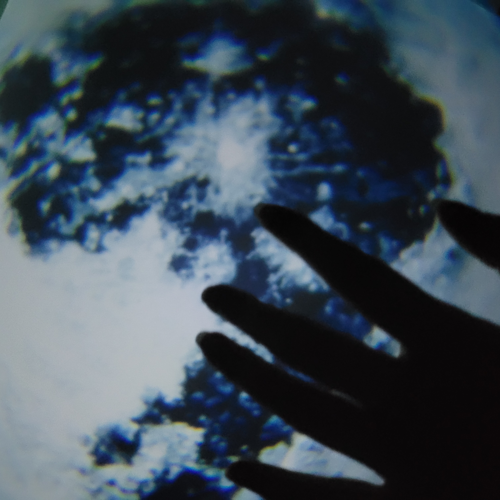

Photography Collection 004
Blue Reach
This photograph explores abstraction through shadow, blur, and cool color. The hand appears as a dark silhouette against softened tree shapes, creating a quiet moment that feels half observed and half imagined.
The composition relies on contrast instead of sharp detail. The deep blues, soft focus, and organic background shapes create a dreamlike atmosphere, while the hand gives the image a human point of entry.